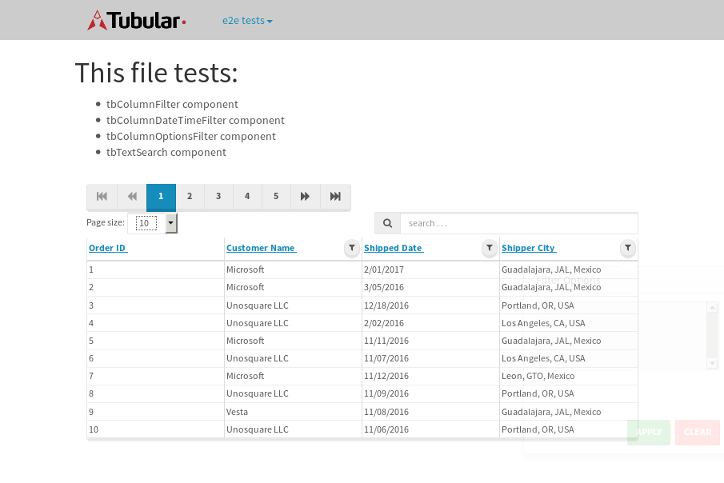
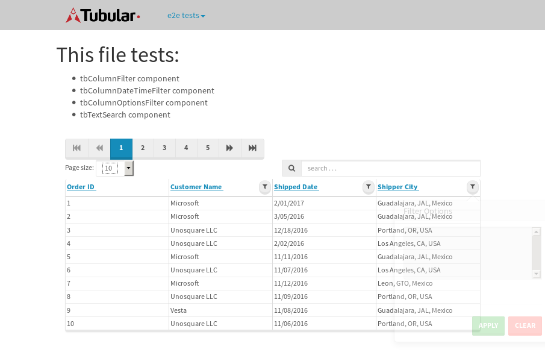

tbColumn.Grid Sorting - 176.789sTests: 5Skipped: 0Failures: 3 should sort data in ascending order then on descending order when sorting by Order Id column - 43.983sExpected '1' to be '500'.✗Expected '20' to be '481'.✗Tests passed: 50.00%should order data in ascending order when click-sorting an unsorted text column - 23.097sTests passed: 100.00%should order data in descending order when click-sorting an ascending-sorted text column - 43.409sExpected 'Advanced Technology Systems' to be 'Vesta'.✗Tests passed: 0.00%should order data in ascending order when click-sorting an unsorted date column - 23.119sTests passed: 100.00%should order data in descending order when click-sorting twice an unsorted date column - 43.169sExpected '12/30/2015' to match /1\/01\/2016/.✗Tests passed: 0.00%
tbEmptyForm - 18.901sTests: 3Skipped: 0Failures: 0 should have an empty required field - 17.232sTests passed: 100.00%should not be able to click on save - 0.067sTests passed: 100.00%should load default value for numeric field - 0.037sTests passed: 100.00%
Tubular Filters.tbColumnFilter - 107.564sTests: 12Skipped: 0Failures: 0 should cancel filtering when clicking outside filter-popover - 8.65sTests passed: 100.00%should disable Value text-input for "None" filter - 5.48sTests passed: 100.00%should disable apply button for "None" filter - 5.584sTests passed: 100.00%should decorate popover button when showing data is being filtered for its column - 10.972sTests passed: 100.00%should correctly filter data for the "Equals" filtering option - 6.264sTests passed: 100.00%should correctly filter data for the "Not Equals" filtering option - 6.286sTests passed: 100.00%should correctly filter data for the "Contains" filtering option - 6.564sTests passed: 100.00%should correctly filter data for the "Not Contains" filtering option - 6.888sTests passed: 100.00%should correctly filter data for the "Starts With" filtering option - 6.856sTests passed: 100.00%should correctly filter data for the "Not Starts With" filtering option - 6.018sTests passed: 100.00%should correctly filter data for the "Ends With" filtering option - 6.023sTests passed: 100.00%should correctly filter data for the "Not Ends With" filtering option - 6.13sTests passed: 100.00%
Tubular Filters.tbColumnDateTimeFilter - 131.912sTests: 12Skipped: 0Failures: 0 should cancel filtering when clicking outside filter-popover - 7.455sTests passed: 100.00%should disable Value text-input for "None" filter - 5.495sTests passed: 100.00%should disable apply button for "None" filter - 5.855sTests passed: 100.00%should clear filtering when clicking on Clean button - 18sTests passed: 100.00%should decorate popover button when showing data is being filtered for its column - 11.288sTests passed: 100.00%should correctly filter data for the "Equals" filtering option - 5.954sTests passed: 100.00%should correctly filter data for the "Not Equals" filtering option - 7.65sTests passed: 100.00%should correctly filter data for the "Between" filtering option - 11.822sTests passed: 100.00%should correctly filter data for the "Greater-or-equal" filtering option - 12.083sTests passed: 100.00%should correctly filter data for the "Greater" filtering option - 12.312sTests passed: 100.00%should correctly filter data for the "Less-or-equal" filtering option - 11.356sTests passed: 100.00%should correctly filter data for the "Less" filtering option - 11.337sTests passed: 100.00%
Tubular Filters.tbColumnOptionsFilter - 28.647sTests: 3Skipped: 0Failures: 2 should cancel filtering when clicking outside filter-popover - 5.666sFailed: Index out of bound. Trying to access element at index: 0, but there are only 0 elements that match locator By(css selector, option)✗Tests passed: 0.00%should decorate popover button when showing data is being filtered for its column - 5.762sFailed: Index out of bound. Trying to access element at index: 0, but there are only 0 elements that match locator By(css selector, option)✗Tests passed: 50.00%should filter column-elements in accordance to the selected filter when selecting a single option - 5.851sTests passed: 100.00%
Tubular Filters.tbTextSearch - 48.044sTests: 5Skipped: 0Failures: 0 min-chars is not set - 0.092sTests passed: 100.00%should filter data in searchable-column customer name to matching inputted text, starting from 3 characters - 7.637sTests passed: 100.00%should filter data in searchable-column shipper city to matching inputted text, starting from 3 characters - 12.968sTests passed: 100.00%should show clear button when there is inputted text only - 5.63sTests passed: 100.00%should clear filtering when clicking clear button - 15.419sTests passed: 100.00%
tbForm related components.tbCheckboxField - 11.308sTests: 2Skipped: 0Failures: 0 should save changes on "SAVE" - 4.439sTests passed: 100.00%should discard changes on "CANCEL" - 3.18sTests passed: 100.00%
tbForm related components.tbDropDownEditor - 14.986sTests: 5Skipped: 0Failures: 0 should set initial input value to the value of "value" attribute when defined - 2.156sTests passed: 100.00%should show the component name value in a label field when "showLabel" attribute is true - 1.607sTests passed: 100.00%should show a help field equal to this attribute, is present - 1.704sTests passed: 100.00%should submit modifications to item/server when clicking form "Save" - 4.941sTests passed: 100.00%should NOT submit modifications to item/server when clicking form "Cancel" - 2.667sTests passed: 100.00%
tbForm related components.tbTextArea - 20.792sTests: 7Skipped: 0Failures: 0 should set initial input value to the value of "value" attribute when defined - 2.206sTests passed: 100.00%should be invalidated when the number of chars is not in the range of "min" and "max" attributes - 2.513sTests passed: 100.00%should show the component name value in a label field when "showLabel" attribute is true - 1.625sTests passed: 100.00%should show a help field equal to this attribute, is present - 1.512sTests passed: 100.00%should require the field when the attribute "required" is true - 2.25sTests passed: 100.00%should submit modifications to item/server when clicking form "Save" - 5.746sTests passed: 100.00%should NOT submit modifications to item/server when clicking form "Cancel" - 3.205sTests passed: 100.00%
tbForm related components.tbDateEditor - 19.312sTests: 6Skipped: 0Failures: 0 should set initial date value to the value of "value" attribute when defined - 1.665sTests passed: 100.00%should be invalidated when the date is not in the range of "min" and "max" attributes - 2.41sTests passed: 100.00%should show the component name value in a label field when "showLabel" attribute is true - 2.033sTests passed: 100.00%should show a help field equal to this attribute, is present - 1.8sTests passed: 100.00%should submit modifications to item/server when clicking form "Save" - 3.781sTests passed: 100.00%should NOT submit modifications to item/server when clicking form "Cancel" - 5.92sTests passed: 100.00%
tbForm related components.tbTypeaheadEditor - 24.065sTests: 7Skipped: 0Failures: 0 should show an options list when there is an API-info/component entered-data - 2.957sTests passed: 100.00%should select the option clicked - 2.495sTests passed: 100.00%should show a "delete" button when an option/match is selected, and delete the option if button is clicked - 2.844sTests passed: 100.00%should show a label value equal to the component name when "showLabel" attribute is true - 2.375sTests passed: 100.00%should require a value when "require" attribute is true - 2.844sTests passed: 100.00%should submit modifications to item/server when clicking form "Save" - 5.741sTests passed: 100.00%should NOT submit modifications to item/server when clicking form "Cancel" - 2.872sTests passed: 100.00%
tbForm related components.tbSimpleEditor - 26.767sTests: 9Skipped: 0Failures: 0 should set initial input value to the value of "value" attribute when defined - 2.13sTests passed: 100.00%should be invalidated when the number of chars is not in the range of "min" and "max" attributes - 2.555sTests passed: 100.00%should show the component name value in a label field when "showLabel" attribute is true - 1.784sTests passed: 100.00%should set input placeholder to the value of "placeholder" attribute - 2.727sTests passed: 100.00%should validate the control using the "regex" attribute, if present - 2.331sTests passed: 100.00%should show a help field equal to this attribute, is present - 1.777sTests passed: 100.00%should require the field when the attribute "required" is true - 2.204sTests passed: 100.00%should submit modifications to item/server when clicking form "Save" - 6.336sTests passed: 100.00%should NOT submit modifications to item/server when clicking form "Cancel" - 3.013sTests passed: 100.00%
tbForm related components.tbNumericEditor - 22.557sTests: 7Skipped: 0Failures: 0 should set initial component value to the value of "value" attribute when defined - 2.338sTests passed: 100.00%should be invalidated when the entered number is not in the range of "min" and "max" attributes - 2.701sTests passed: 100.00%should show the component name value in a label field when "showLabel" attribute is true - 1.931sTests passed: 100.00%should show a help field equal to this attribute, is present - 1.929sTests passed: 100.00%should require the field when the attribute "required" is true - 2.509sTests passed: 100.00%should submit modifications to item/server when clicking form "Save" - 6.177sTests passed: 100.00%should NOT submit modifications to item/server when clicking form "Cancel" - 3.105sTests passed: 100.00%
tbForm Connection Error NoModelKey - 2.087sTests: 1Skipped: 0Failures: 0 tbForm connection error functionality - 0.005sTests passed: 100.00%
tbForm Connection Error NoServerUrl - 1.851sTests: 1Skipped: 0Failures: 0 tbForm connection error functionality - 0.003sTests passed: 100.00%
tbGridComponents - 31.893sTests: 6Skipped: 0Failures: 1 should add item with newRow method - 4.787sTests passed: 100.00%should add item with newRow method and cancel action - 0.614sTests passed: 100.00%should update item with tbSaveButton - 2.256sTests passed: 100.00%should NOT update item on cancel Update action - 1.239sTests passed: 100.00%should remove item with tbRemoveButton - 20.76sExpected 32 not to be 32, 'should remove the row from the table'.✗Tests passed: 50.00%should NOT remove item on cancel Remove action - 0.865sTests passed: 100.00%
tbGridPager.navigation buttons - 2.425sTests: 1Skipped: 0Failures: 0 should perform no action when clicking on the numbered navigation button corresponding to the current-showing results page - 0.615sTests passed: 100.00%
tbGridPager.navigation buttons.first/non-last results page related functionality - 0.702sTests: 2Skipped: 0Failures: 0 should disable "first" and "previous" navigation buttons when in first results page - 0.115sTests passed: 100.00%should enable "last" and "next" navigation buttons when in a results page other than last - 0.587sTests passed: 100.00%
tbGridPager.navigation buttons.last/non-first results page related functionality - 1.108sTests: 2Skipped: 0Failures: 0 should disable "last" and "next" navigation buttons when in last results page - 0.558sTests passed: 100.00%should enable "first" and "previous" navigation buttons when in a results page other than first - 0.55sTests passed: 100.00%
tbGridPager.page navigation - 3.662sTests: 5Skipped: 0Failures: 0 should go to next results page when clicking on next navigation button - 1.023sTests passed: 100.00%should go to previous results page when clicking on previous navigation button - 0.988sTests passed: 100.00%should go to last results page when clicking on last navigation button - 0.575sTests passed: 100.00%should go to first results page when clicking on first navigation button - 0.577sTests passed: 100.00%should go to corresponding results page when clicking on a numbered navigation button - 0.498sTests passed: 100.00%
tbGridPagerInfo - 4.247sTests: 2Skipped: 0Failures: 0 should show text in accordance to numbered of filter rows and current results-page - 1.761sTests passed: 100.00%should show count in footer - 0.026sTests passed: 100.00%
tbPageSizeSelctor - 12.148sTests: 4Skipped: 0Failures: 0 should filter up to 10 data rows per page when selecting a page size of "10" - 2.937sTests passed: 100.00%should filter up to 20 data rows per page when selecting a page size of "20" - 2.248sTests passed: 100.00%should filter up to 50 data rows per page when selecting a page size of "50" - 2.654sTests passed: 100.00%should filter up to 100 data rows per page when selecting a page size of "100" - 2.796sTests passed: 100.00%
tbSingleForm - 13.916sTests: 8Skipped: 1Failures: 1 should load correct info - 0s***Skipped***Tests passed: 0%should change customer name - 1.766sTests passed: 100.00%should save it - 2.266sExpected '' to be 'Saved'.✗Tests passed: 50.00%should clear the inputs - 2.082sTests passed: 100.00%should update - 2.016sTests passed: 100.00%should reset editor - 1.87sTests passed: 100.00%should not save if not Changes - 1.788sTests passed: 100.00%should not be able to click on save - 2.126sTests passed: 100.00%


{kind=link}
{kind=link}